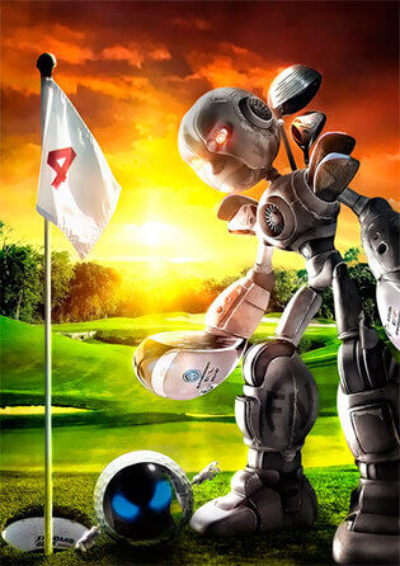

WebP — это формат файла, разработанный компанией Google в 2010 году. Его особенностью
является продвинутый алгоритм сжатия, позволяющий сократить размер картинки без
видимых потерь в качестве.
Да, другие форматы тоже поддерживают сжатие, но технологии, стоящие в основе WebP,
куда прогрессивнее. И если сравнивать WebP с конкурентами в соотношении степени сжатия
к качеству картинки, то разработка Google одержит уверенную победу.
В среднем вес картинок сокращается на 25–35%, что позволяет вебмастерам размещать на
сайтах больше изображений, не тратя впустую драгоценное пространство на жестком диске
арендованного VDS.
С фотоснимками PNG справляется хуже более узкоспециализированных расширений.
К тому же PNG заметно тяжелее того же JPEG даже после компрессии (хоть и сохраняет высокое качество).

Главный недостаток JPEG — заметная потеря в качестве и детализации из-за недостаточно продуманных алгоритмов сжатия.
Это особенно заметно при приближении или когда у картинки изначально не слишком высокое разрешение.
У WebP качество картинки практически не теряется.
WEBP имеет все возможности GIF, но только в улучшенном варианте: Эффективней с прозрачными слоями
При анимации последующий кадр хранит только изменения предыдущего.
Поддержка данного формата среди браузеров и веб-приложений постепенно растет. Сейчас
с WebP не возникает проблем ни в Google Chrome, ни даже в Safari. Но остались сайты и
программы, которые все еще не знакомы с этим расширением картинок. Поддержка в
браузере Apple появилась не так давно, а в Internet Explorer не появится никогда.